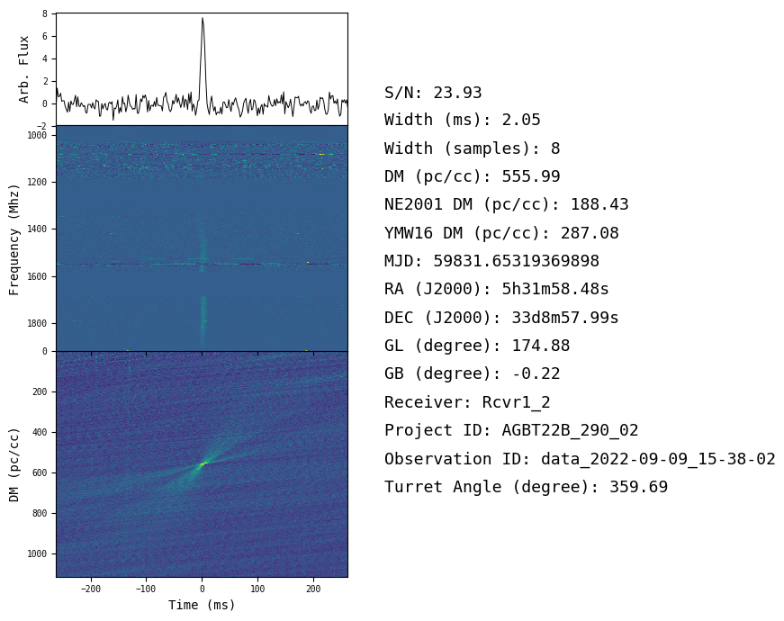

Fast Radio Bursts (FRBs) Research
How Access Was Gained:
I had read about Fast Radio Bursts (FRBs), also known as Lorimer Bursts, and coincidentally Dr. Lorimer, who originally discovered these signals, worked at WVU where I was actively doing research.
Research Description and Contribution:
After receiving the data, I wrote Python code to organize and upload it. I learned to check single-pulse FRB data and taught my group to repeat this process.
Research Skills Developed:
While working on this project, I built skills to organize and complete research independently.
Associated Publications and Presentations:
- N/A